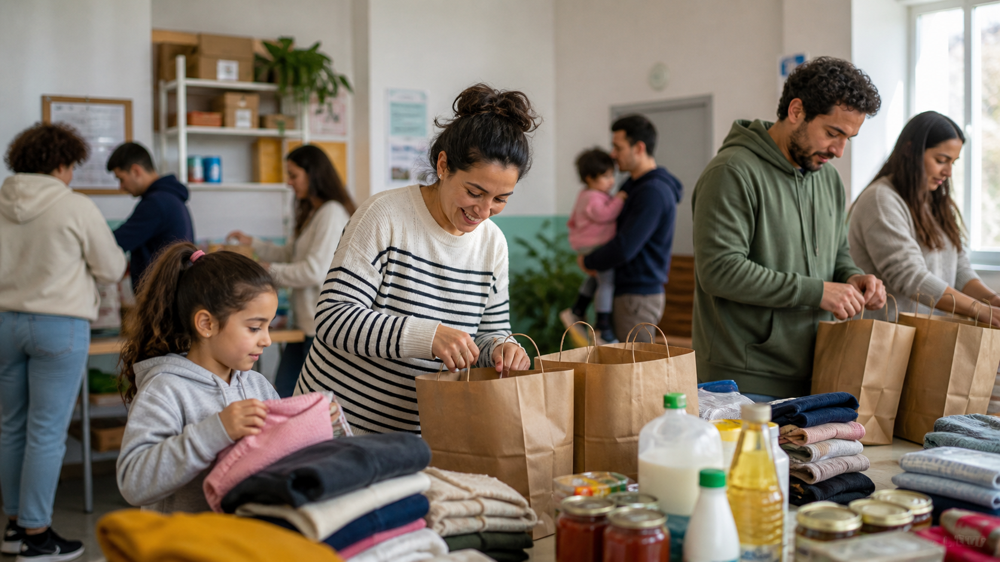

Food and Practical Help
Support for everyday needs, including food distribution and guidance for families finding their footing.
Social action in Málaga
Diez42 helps immigrants, refugees, and other newcomers integrate through language classes, job training, food support, parent and family activities, exercise, art, and community connection.
v72.1

Focus areas
Support for everyday needs, including food distribution and guidance for families finding their footing.
Language practice, English activities for children, job training, and skill-building opportunities.
Parent activities, exercise, art, cultural connection, and a place to belong in Málaga.
How it works
People arrive through local contacts, partner referrals, social channels, or community relationships.
The team points families toward classes, activities, food support, training, or practical help.
The center becomes more than a service point: it becomes a trusted place of connection.

Contact
Use this space for email, phone, WhatsApp, Instagram, Facebook, and a simple contact form later.
A site that needs to be understood quickly by newcomers, volunteers, partner organizations, churches, and local supporters.